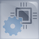

Controllers MELSEC iQ-R Series Fitur produk -Konsep-

Penanganan data ekstensif dari lantai produksi hingga sistem proses bisnis
Jajaran produk "Intelligence" terdiri dari produk informasi canggih yang saling terhubung yang menangani, mengumpulkan, dan memproses berbagai data, yang meningkatkan produktivitas, kemampuan pemeliharaan, mengurangi waktu henti sistem dan biaya aset. Jajaran ini mencakup konektivitas database sistem IT secara langsung melalui modul antarmuka MES, pemrograman tingkat C/C++ untuk proses yang memerlukan analitik tingkat tinggi seperti pengujian dalam proses dan protokol komunikasi khusus aplikasi. Selain itu, modul pencatat data kecepatan tinggi dan modul komunikasi data kecepatan tinggi menyederhanakan pemecahan masalah dan mempromosikan solusi pemeliharaan berbiaya rendah.
Memanfaatkan berbagai aplikasi mitra

Kustomisasi
Fungsi khusus dan pustaka komunikasi disediakan, memungkinkan akses ke modul sistem kontrol. Selain itu, berbagai aplikasi mitra tersedia, membantu mengurangi waktu dan biaya pengembangan karena pengembangan tambahan aplikasi dan driver tidak diperlukan.
Ideal untuk lingkungan industri yang keras
Tangguh
Sebagai bagian dari MELSEC iQ-R Series, kualitas dan keandalan tinggi dipastikan dengan lebih sedikit kemungkinan kegagalan produk, seperti yang terkait dengan perangkat keras berbasis komputer. Selain itu, dirancang tanpa kipas tambahan, produk dapat digunakan dalam aplikasi berbasis fab bersih.
Pengumpulan data produksi berkecepatan tinggi
Pengumpulan data
Modul pencatat data kecepatan tinggi dan modul komunikasi data kecepatan tinggi memungkinkan pengumpulan data kecepatan tinggi yang dapat disinkronkan dengan waktu pemindaian sistem kontrol, memungkinkan data dikonversi untuk diproses pada komputer. Waktu pengembangan program dapat diminimalkan, sehingga mewujudkan agregasi dan analisis data dalam waktu singkat.
Pemrograman berbasis C/C++
Fleksibilitas
Berdasarkan prosesor dual-core Arm® Cortex®-A9, CPU Pengontrol C dengan OS real-time VxWorks® ideal untuk kebutuhan analitis tingkat tinggi di mana data mentah harus diproses, seperti untuk pengujian kualitas manufaktur dalam lini. Modul fungsi cerdas C, berdasarkan prosesor yang sama, adalah modul yang dapat diprogram serbaguna yang dapat digunakan untuk menginstal protokol komunikasi khusus industri; misalnya, pemantauan seluruh pabrik pada pertanian pembangkit tenaga angin, otomasi bangunan, dan jaringan fieldbus terbuka industri.
Konektivitas dengan server database, klien OPC UA, dan layanan cloud

Koneksi informasi
Modul antarmuka MES mewujudkan akses langsung ke sistem IT dengan pengaturan yang mudah. Biaya sistem keseluruhan dikurangi karena konfigurasi sederhana tidak memerlukan komputer gateway. Modul fungsi cerdas C mendukung Debian GNU/Linux yang mewujudkan konektivitas dengan layanan cloud pihak ketiga. Pemeliharaan prediktif dan jarak jauh mesin mudah diwujudkan. Modul server OPC UA mendukung protokol komunikasi yang aman dan terbuka, menghubungkan sistem IT dan lantai produksi secara mulus.